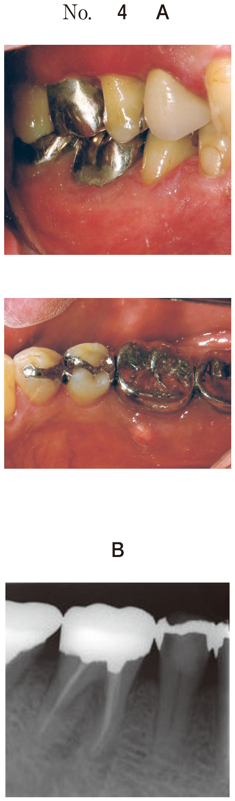

乳歯用既製金属冠
適応
- 歯冠崩壊が大きい乳臼歯
- 歯髄処置（断髄・抜髄）後の乳歯
- 隣接面を含む広範な齲蝕
- エナメル質形成不全症
支台歯形成（頻出）
形成のポイント
- 近遠心面は平行にする
- 頬側面は二面形成にする（自浄作用維持）
- 咬合面は1〜1.5mm削除（2mmは過剰）
- マージンは歯肉縁下0.5mmに設定
辺縁形態
| 形態 | 適応 |
|---|---|
| ナイフエッジ | 乳歯用既製金属冠（正解） |
| シャンファー | 乳歯用既製金属冠には不適 |
使用器材（頻出）
| 器材 | 用途 |
|---|---|
| Gordonのプライヤー | 金属冠の歯頸部圧接 |
| カーボランダムポイント | 金属冠のマージン調整・研磨 |
| 金冠バサミ | 金属冠のトリミング |
| コンタリングプライヤー | 金属冠の豊隆調整 |
関連器材（混同注意）
| 器材 | 用途 |
|---|---|
| Youngのプライヤー | ラバーダムクランプ装着 |
| Elliottのセパレーター | 歯間分離 |
| ウッドウェッジ | CR修復時の隔壁 |
過去問
105A52
乳歯用既製金属冠修復時に必要なのはどれか。2つ選べ。
a ウッドウェッジ
b メタルストリップス
c Youngのプライヤー
d Gordonのプライヤー
e カーボランダムポイント
b メタルストリップス
c Youngのプライヤー
d Gordonのプライヤー
e カーボランダムポイント
正解：d, e
【解説】乳歯用既製金属冠にはGordonのプライヤー（歯頸部圧接）とカーボランダムポイント（マージン調整）が必要。Youngのプライヤーはラバーダム用。
108C107
既製乳歯用金属冠の支台歯の辺縁形態の模式図を示す。正しいのはどれか。1つ選べ。

a ア
b イ
c ウ
d エ
e オ
b イ
c ウ
d エ
e オ
正解：a
【解説】乳歯用既製金属冠の辺縁形態はナイフエッジ。シャンファーやショルダーは永久歯用鋳造冠に用いる。
114C63・C64
4歳の女児。下顎右側第一乳臼歯の自発痛を主訴として来院した。冷温水痛と打診痛を認める。適切な処置はどれか。（C63）/ 処置後に乳歯用既製金属冠で修復することとした。支台歯形成で正しいのはどれか。3つ選べ。（C64）
【C63】a 間接覆髄 b 直接覆髄 c 生活歯髄切断 d 抜髄 e 感染根管治療
【C64】a 近遠心面は平行にする b 頬側面は二面形成にする c 咬合面は2mm削除する d マージンはシャンファー型にする e マージンは歯肉縁下0.5mmに設定する
【C64】a 近遠心面は平行にする b 頬側面は二面形成にする c 咬合面は2mm削除する d マージンはシャンファー型にする e マージンは歯肉縁下0.5mmに設定する
正解：C63→d、C64→a, b, e
【解説】自発痛・打診痛がある乳歯は抜髄の適応。支台歯形成は近遠心面平行、頬側面二面形成、歯肉縁下0.5mmが正しい。咬合面は1〜1.5mm削除（2mmは過剰）、マージンはナイフエッジ（シャンファーではない）。
108D9
4歳の男児。下顎左側第一乳臼歯の冷水痛を主訴として来院した。┌Dに生活歯髄切断を行った。初診時の口腔内写真（別冊No.9A）とエックス線写真（別冊No.9B）を別に示す。最終修復処置として適切なのはどれか。1つ選べ。


a インレー修復
b アマルガム修復
c 既製乳歯用金属冠
d コンポジットレジン修復
e グラスアイオノマーセメント修復
b アマルガム修復
c 既製乳歯用金属冠
d コンポジットレジン修復
e グラスアイオノマーセメント修復
正解：c
【解説】歯髄処置（生活歯髄切断）後の乳臼歯は歯冠強度が低下するため既製乳歯用金属冠で全部被覆する。CR修復では咬合力に耐えられない可能性がある。